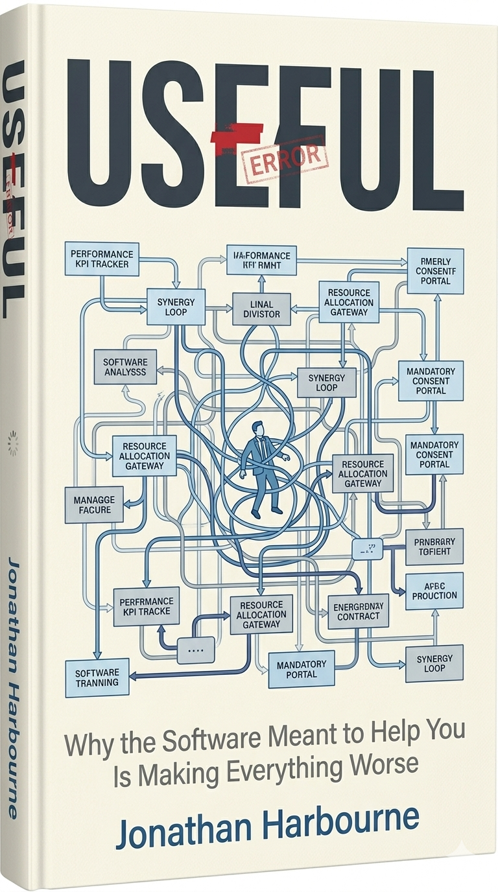

In progress · Saltmarsh Press
Useful
Why the Software Meant to Help You Is Making Everything Worse
Enterprise software is a design disaster — and most of the people who use it know it. This book asks why software that was built to help people work has become such an obstacle to getting anything done, and what it would take to fix it. Drawing on years of enterprise UX practice at Capgemini and beyond, it makes the case that usability is not a feature: it is the product.